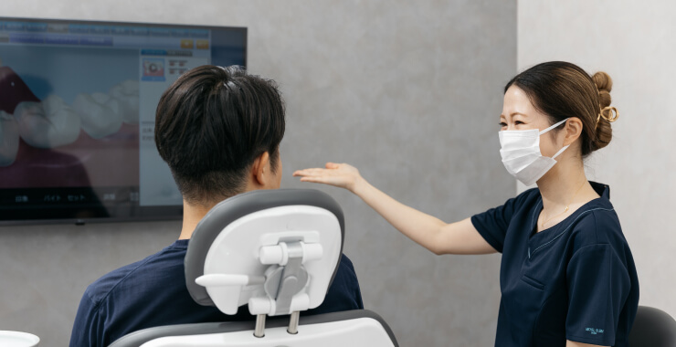

当院について About
6つの特徴 Features
-
 01
01口腔外科学会認定医が
高度な歯科治療を提供します設備や技術の面から一般の歯科医院では難しい親知らずの抜歯や、口腔内の粘膜にあるできものの治療、嚢胞の摘出などの口腔外科治療も可能です。
-
02
患者様に正確な情報をご説明
医師の説明責任を守ります当院で１番大切にしているのは患者様とのコミュニケーションです。また患者様が鏡では見ることのできない口腔内を写真で確認していただき、ご納得いただける治療を心がけております。
-
 03
03高度医療機器を用いた診察
歯科用CT、口腔内スキャナー、口腔内カメラを導入しており、通常のレントゲンでは確認できない微細な部位を確認しての治療が可能です。より精密な検査と正確な診断、質の高い医療を提供いたします。
-
04
通院しやすい立地と
100台以上の駐車場千葉都市モノレール天台駅から徒歩1分で、商業施設(skip天台)内に医院がある為、大きな駐車場がご利用いただけます。また土曜日も診療しておりますので、平日に治療に来れない方にもお越しいただけます。
-
 05
05予防・メインテナンスを
重視します歯科治療においてブラッシングは非常に重要です。当院では治療だけでなく、歯磨き指導や予防、メインテナンスに力を入れております。
-
 06
06ベビーカーで診療室まで
入っていただけます小さなお子様連れの方にも来ていただけるように、診療室は広めに設計し、ベビーカーのまま診療室に入っていただけます。
院内紹介 Hospital
-

立地
横浜市営地下鉄ブルーラインとグリーンラインが通るセンター北駅より徒歩3分。地元の方はもちろん、遠方からの患者様にも通いやすい、便利な立地です。
-
受付
常に気持ちよくご来院いただけるよう、スタッフ一同心がけております。ご不明点や心配なことがございましたら、お気軽におたずねください。
-
清潔で衛生的な環境
院内の空気の清浄化や換気はもちろん、診療スペース・共用部分の消毒・除菌を徹底し、常に清潔な環境づくりを目指しております。
-
落ち着ける空間
医療機関を受診する際には、緊張される方も多いと思います。インテリアや待合スペースの配置など、落ち着ける空間づくりを心がけております。
設備紹介 Facility
歯科用CT
治療の第一歩は、
的確な診断からはじまります。
最新の歯科用CTで撮影した
三次元画像を元に、
患者様のお口の状態を正確に把握し、
最良の治療方針をご提案いたします。
-

口腔内カメラ
見えにくい口腔内を、細部まで鮮明に映し出すことができる歯科用カメラです。
-
モニター
口腔内の状態を「見える化」し、歯科治療そして予防への意識を高めることができます。
-

滅菌器
安心して治療を受けていただけるよう、医療器具の徹底した衛生管理を行っております。
-

完全個室診察室
プライバシーに配慮した、完全個室の診察室もございます。
院長挨拶 Greeting
Eigo 挨拶の見出しが入ります挨拶の見出しが入ります
ここには挨拶の本文が入ります。挨拶の本文が入ります。挨拶の本文が入ります。挨拶の本文が入ります。挨拶の本文が入ります。挨拶の本文が入ります。挨拶の本文が入ります。挨拶の本文が入ります。挨拶の本文が入ります。挨拶の本文が入ります。挨拶の本文が入ります。挨拶の本文が入ります。挨拶の本文が入ります。挨拶の本文が入ります。挨拶の本文が入ります。
院長 藤原 亘
スタッフ紹介 Staff
-
矯正歯科医 丸山先生(仮)
紹介文やひとことなどダミーが入ります。紹介文やひとことなどダミーが入ります。紹介文やひとことなどダミーが入ります。紹介文やひとことなどダミーが入ります。紹介文やひとことなどダミーが入ります。紹介文やひとことなどダミーが入ります。